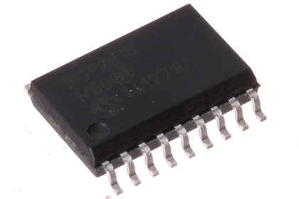

SMD (SOIC-16) CAN Controller SPI (MCP2515) - ICS2515

Summary
Name:
SMD (SOIC-16) CAN Controller SPI (MCP2515)
ID:
ICIC-SC16-X-K2515-01
Hex ID:
ICS2515
WebPage:
https://github.com/oomlout/oomlout-OOMP/wiki/ICIC-SC16-X-K2515-01
Short URL:
http://oom.lt/ICS2515
Revision History:
https://github.com/oomlout/oomlout-OOMP/blob/master/parts/ICIC-SC16-X-K2515-01/
Type
Size
Color
Description
Index
ICIC
SC16
16 Pin SMD (SOIC)
X
K2515
CAN Controller SPI (MCP2515)
01
Images
About
This part is awaiting a description.
Specifications
Info
Value
Size
16 Pin SMD (SOIC)
Description
CAN Controller SPI (MCP2515)
Extra Details
Spotted a mistake, want to add more? Let us know
oomp@oomlout.com
All images and resources are licensed [CC BY-SA] unless otherwise stated (ie. the datasheets)